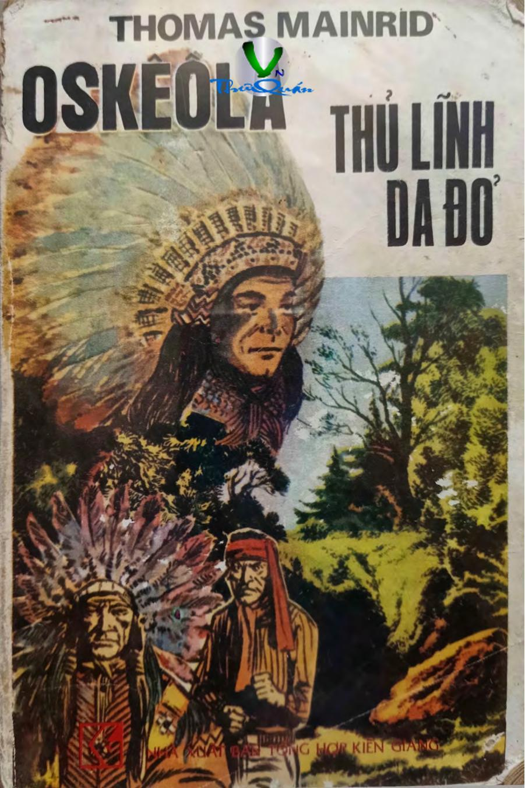

« Back
Oskeola Thủ Lĩnh Da Đỏ
By Thomas Mainrid

LỜI GIỚI THIỆU
ĐỒN ĐIỀN INDIGO
HAI ANH CHÀNG TÊN JEC
“HOMMOC” XỨ FLORIDA
TÊN MULAT VÀ KẺ BÁM ĐUÔI
CÁ SẤU
HỒ BA BA
DIỀU HÂU CHÚA
TAI HỌA TẮM AO
CHÀNG TRAI METIS
TRUY BẮT
BẢN ÁN RỢN NGƯỜI
MỘT CUỘC SĂN NGƯỜI
RINGGOLD TRẢ THÙ
MAIUYMI
HÒN ĐẢO
WEST-POINT
NGƯỜI DA ĐỎ XEMINOL
NGƯỜI ANH HÙNG DA ĐỎ
CÔNG LÝ MIỀN BIÊN GIỚI
MÁNH KHÓE GIAN XẢO
MA QUỈ HIỆN HÌNH
KẺ BẮN LÉN
ĐỒN BIÊN PHÒNG
ĐÀM PHÁN
MẶT TRỜI LÊN
TỐI HẬU THƯ
CÂU CHUYỆN QUANH BÀN ĂN
CÁC THỦ LĨNH PHẢN BỘI
BÓNG ĐEN TRÊN MẶT NƯỚC
HAJO - EWA
ÂM MƯU QUỶ QUÁI
XIN DỪNG THỀ
PHƯƠNG ÁN HÀNH ĐỘNG
PHIÊN HỌP CUỐI CÙNG
PHẾ BỎ THỦ LĨNH
CHỮ KÝ CỦA OSKEOLA
“THỢ GÂY GỔ GALLAHER”
ĐẤU SÚNG
HÒ HẸN LỨA ĐÔI?
TAN BÓNG NGHI NGỜ
TRẬN ĐẤU KIẾM KHÔNG HẸN TRƯỚC
LỜI TỎ TÌNH THẦM LẶNG
NGƯỜI TRONG NGỤC
TIẾNG HÚ THỀ SINH TỬ
CHIẾN TRANH
CHÀNG KỴ SĨ KHÓ HIỂU
KỴ SĨ LÀ AI?
XÃ GIAO LẠNH NHẠT
TÂM TRẠNG EM TÔI
NÓI CHUYỆN THẲNG THẮN
QUÂN TÌNH NGUYỆN
NHỮNG THAY ĐỔI KHÓ HIỂU
VÉN MÀN BÍ MẬT
ÔNG LÃO HICMEN
TIN BÁO KHẨN CẤP
QUÀ TẶNG CỦA NGƯỜI YÊU
HÀNH QUÂN
NHÁT BÚA VÀO ĐẦU
THỦ LĨNH BÁO THÙ
BỮA TIỆC GIÁNG SINH ĐẪM MÁU
THẢM BẠI DEID
SAU TRẬN ĐÁNH
TRẬN ĐÁNH TRÊN SÔNG
RÚT CHẠY
NGƯỜI DA ĐỎ QUA SÔNG
THƯƠNG LƯỢNG
KHÔNG CÁNH MÀ BAY
TIN DỮ
THẢM HỌA KINH HOÀNG
TRUY LÙNG BỌN SÁT NHÂN
BÁO ĐỘNG NHẦM
DẤU CHÂN MẤT HÚT
QUA ĐỒNG CỎ
ĐÊM RỪNG
HAI PHÁT SÚNG HIỆU
TRẠI KHÔNG NGƯỜI
KHU RỪNG CHẾT
HUYẾT CHIẾN GIỮA VÒNG VÂY
PHÁT ĐẠN TỬ THẦN CỦA JEC
BỮA ĂN ĐẠM BẠC
PHÁT ĐẠN BẮN TỪ SAU LƯNG
PHIÊN TÒA TRONG BIỂN LỬA
TRỪNG PHẠT
KẺ THÙ BẤT NGỜ
ĐỤNG ĐỘ ĐÊM MƯA
BA DẺ LÔNG ĐÀ ĐIỂU
CHÔN SỐNG VÀ HỎA THIÊU
QUỈ SỨ HAY THIÊN THẦN?
ARENS RINGGOLD ĐỀN TỘI
LINH CẢM VỀ CÁI CHẾT